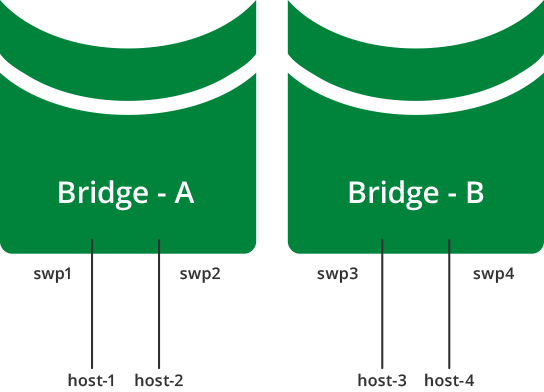

Traditional Mode Bridges
Cumulus Networks recommends you use a VLAN-aware bridge on your switch. You use traditional mode bridges only if you need to run more than one bridge on the switch or if you need to use PVSTP+.
Contents
Creating a Traditional Mode Bridge
You configure traditional mode bridges in /etc/network/interfaces file. To create a traditional mode bridge:
-
Open the /etc/network/interfaces file in a text editor.
-
Add a new stanza to create the bridge, and save the file. The example below creates a bridge with STP enabled and the MAC address ageing timer configured to a lower value than the default:
auto my_bridgeiface my_bridgebridge-ports bond0 swp5 swp6bridge-ageing150bridge-stp onConfiguration Option
Description
Default Value
bridge-ports
List of logical and physical ports belonging to the logical bridge.
N/A
bridge-ageing
Maximum amount of time before a MAC addresses learned on the bridge expires from the bridge MAC cache.
300 seconds
bridge-stp
Enables spanning tree protocol on this bridge. The default spanning tree mode is Per VLAN Rapid Spanning Tree Protocol (PVRST).
For more information on spanning-tree configurations see the configuration section: Spanning Tree and Rapid Spanning Tree.
off
The name of the bridge must be:
-
Compliant with Linux interface naming conventions.
-
Unique within the switch.
Do not try to bridge the management port, eth0, with any switch ports (like swp0, swp1, and so forth). For example, if you created a bridge with eth0 and swp1, it will not work.
-
-
Reload the network configuration using the ifreload command:
cumulus@switch:~$ sudo ifreload -a
You can configure multiple bridges, in order to logically divide a switch into multiple layer 2 domains. This allows for hosts to communicate with other hosts in the same domain, while separating them fro hosts in other domains.
You can create only one VLAN-aware bridge on a switch.
The diagram below shows a multiple bridge configuration, where host-1 and host-2 are connected to bridge-A, while host-3 and host-4 are connected to bridge-B. This means that:
-
host-1 and host-2 can communicate with each other.
-
host-3 and host-4 can communicate with each other.
-
host-1 and host-2 cannot communicate with host-3 and host-4.

This example configuration looks like this in the /etc/network/interfaces file:
auto bridge-Aiface bridge-A bridge-ports swp1 swp2 bridge-stp onauto bridge-Biface bridge-B bridge-ports swp3 swp4 bridge-stp onUsing Trunks in Traditional Bridge Mode
The IEEE standard for trunking is 802.1Q. The 802.1Q specification adds a 4 byte header within the Ethernet frame that identifies the VLAN of which the frame is a member.
802.1Q also identifies an untagged frame as belonging to the native VLAN (most network devices default their native VLAN to 1). The concept of native, non-native, tagged or untagged has generated confusion due to mixed terminology and vendor-specific implementations. Some clarification is in order:
-
A trunk port is a switch port configured to send and receive 802.1Q tagged frames.
-
A switch sending an untagged (bare Ethernet) frame on a trunk port is sending from the native VLAN defined on the trunk port.
-
A switch sending a tagged frame on a trunk port is sending to the VLAN identified by the 802.1Q tag.
-
A switch receiving an untagged (bare Ethernet) frame on a trunk port places that frame in the native VLAN defined on the trunk port.
-
A switch receiving a tagged frame on a trunk port places that frame in the VLAN identified by the 802.1Q tag.
A bridge in traditional mode has no concept of trunks, just tagged or untagged frames. With a trunk of 200 VLANs, there would need to be 199 bridges, each containing a tagged physical interface, and one bridge containing the native untagged VLAN. See the examples below for more information.
The interaction of tagged and un-tagged frames on the same trunk often leads to undesired and unexpected behavior. A switch that uses VLAN 1 for the native VLAN may send frames to a switch that uses VLAN 2 for the native VLAN, thus merging those two VLANs and their spanning tree state.
Trunk Example

To create the above example, add the following configuration to the /etc/network/interfaces file:
auto br-VLAN100iface br-VLAN100 bridge-ports swp1.100 swp2.100 bridge-stp onauto br-VLAN200iface br-VLAN200 bridge-ports swp1.200 swp2.200 bridge-stp on